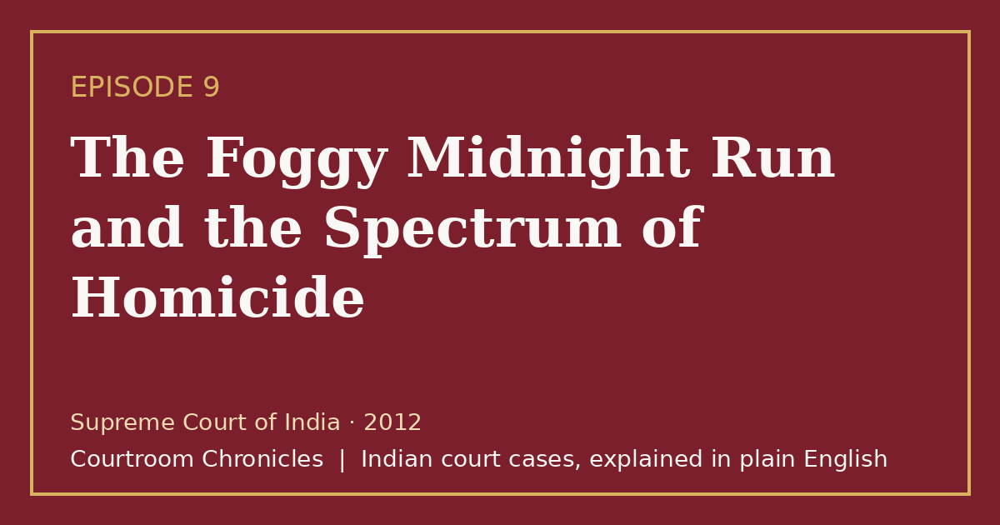

Episode 9 · 2026-10-12 · Sanjeev Nanda BMW hit-and-run case
The Foggy Midnight Run and the Spectrum of Homicide
When a luxury sedan ploughs through a winter police checkpoint killing six people, the Supreme Court defines the boundary between rash driving and culpable homicide.

Listen
- Court
- Supreme Court of India
- Year
- 2012
- Legal Question
- Whether high-speed intoxicated driving causing multiple deaths constitutes culpable homicide with knowledge
- Key Forensic Evidence
- Continuous fluid trail linking the crash site to an upscale residence where the vehicle was being washed
Key takeaways
- Intoxicated high-speed driving in dense fog crosses the boundary from criminal negligence into culpable homicide committed with knowledge.
- The penal provision for causing death by negligence is completely excluded when the offender possesses foresight of probable fatal consequences.
- Immediate flight from a collision scene and attempts to wash away physical evidence reinforce proof of criminal knowledge and consciousness of guilt.
- Advocates who tamper with eyewitnesses commit criminal contempt that threatens the foundational administration of the legal system.
The case in brief
In the pre-dawn winter darkness enveloped by blinding fog, an imported luxury sedan traveling at excessive speed ploughed into a roadside police checkpoint. The impact violently struck seven individuals, killing three patrolling police officers and three night laborers while dragging one officer beneath the undercarriage for over one hundred meters. Rather than stopping to render medical aid, the driver accelerated away into the fog, leaving shattered debris and severe devastation on the roadway.
Investigating officers discovered a continuous trail of leaking motor oil and radiator coolant leading from the collision scene directly to the private driveway of an elite residence. Inside the compound, domestic workers were caught actively washing human tissue and blood from the vehicle's crumpled chassis with a garden hose. Three young occupants, including the driver who was an overseas student from a prominent family, were arrested, with medical tests confirming alcohol consumption.
During the trial, the prosecution faced severe obstacles when primary eyewitnesses turned hostile, prompting separate contempt proceedings against legal advocates for witness tampering. The trial court convicted the driver of culpable homicide not amounting to murder with knowledge, but the high court altered the conviction to simple rash and negligent driving, reducing the prison sentence. On further appeal, the Supreme Court of India analyzed the legal demarcation between criminal negligence and homicide with knowledge.
The Supreme Court ruled that operating a high-powered vehicle at reckless speed in heavy fog while under the influence of alcohol demonstrates clear knowledge of the likelihood of causing death. Reinstating the conviction for culpable homicide not amounting to murder, the bench held that knowledge under the penal code requires foresight of probable fatal consequences. Because the driver had already completed his prison term, the court directed substantial monetary restitution and community service, while reprimanding legal officers for compromising the integrity of the witness box.
Timeline
- The Pre-Dawn Collision
A speeding luxury sedan collides with a police checkpoint in dense fog, fatally injuring six persons.
- Following the Fluid Trail
Police follow a trail of leaking engine fluid from the crash site to a private residence where the vehicle is seized.
- Trial Court Conviction
The trial court convicts the driver of culpable homicide not amounting to murder with knowledge.
- High Court Reduction
The high court reduces the conviction to causing death by negligence and lowers the custodial sentence.
- Contempt for Witness Tampering
The Supreme Court takes disciplinary action against defense and prosecution advocates for covert witness tampering.
- Supreme Court Final Ratio
The Supreme Court reinstates the conviction for culpable homicide with knowledge and mandates substantial restitution.
What the court decided
The Supreme Court of India set aside the high court's reduction to negligence, reinstated the conviction for culpable homicide not amounting to murder with knowledge, and directed substantial financial restitution and community service.
Key holdings
- Driving a heavy motor vehicle at excessive speed in dense fog while under the influence of alcohol constitutes culpable homicide with knowledge rather than mere negligence.
- Section 304A of the penal code applies only to rash or negligent acts that completely lack the element of criminal knowledge or intention.
- A motorist who strikes pedestrians and flees without providing assistance cannot claim the protection of simple accidental negligence.
- The integrity of criminal trials requires strict judicial intervention against attempts by legal practitioners to subvert or tamper with witness testimony.
Legal principles
Knowledge Versus Rashness in Homicide
Culpable homicide with knowledge requires foresight that the act in all probability is likely to cause death, whereas rashness involves risk without conscious foresight of fatal results.
In this case: The court ruled that navigating a powerful vehicle at high speed in zero visibility while intoxicated constitutes an act done with knowledge of probable fatal consequences.
Doctrine of Victim Restitution and Community Service
Courts may combine custodial sentences with mandatory financial compensation and community service to provide tangible redress to affected families.
In this case: The court ordered substantial financial compensation to the families of deceased police officers and laborers alongside required social service.
Sanctity of the Witness Box and Bar Ethics
Advocates owe an overriding duty to the court as officers of the legal system and are strictly prohibited from coaching, inducing, or tampering with witnesses.
In this case: The court affirmed criminal contempt against legal practitioners who conspired to turn primary eyewitnesses hostile.
The law then and now
The incident took place in January 1999, and all judicial proceedings were governed by the Indian Penal Code, 1860, and the Code of Criminal Procedure, 1973. The Bharatiya Nyaya Sanhita, 2023, Bharatiya Nagarik Suraksha Sanhita, 2023, and Bharatiya Sakshya Adhiniyam, 2023 took effect on 1 July 2024 and apply prospectively.
Left: the law applied to this case. Right: the matching provision today (the new criminal codes apply only to offences on or after 1 July 2024).
Substantially unchanged; Part II covers culpable homicide committed with knowledge but without intention. See all 2 episodes on this provision →
Expanded into subsection (1) for rash and negligent acts, with increased penalties for failure to report accidents. See all 2 episodes on this provision →